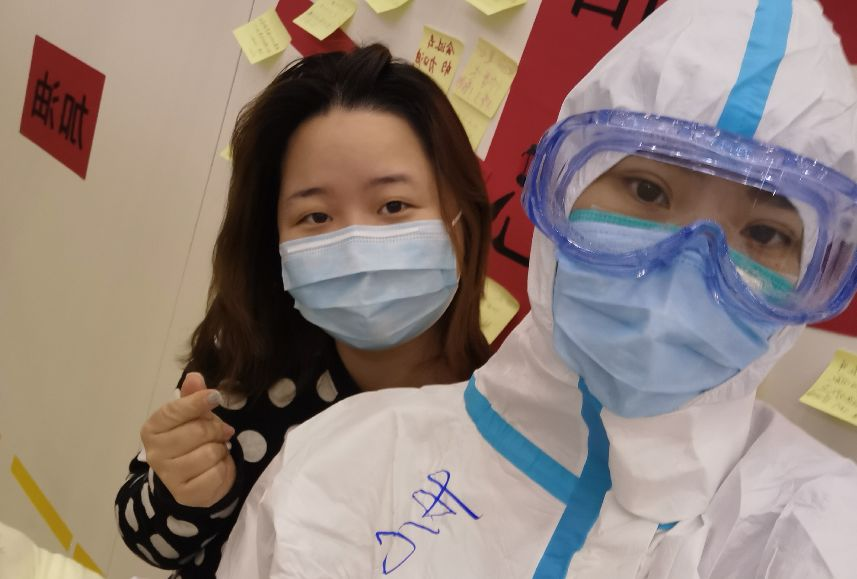
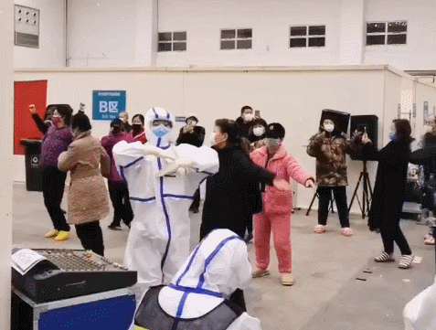
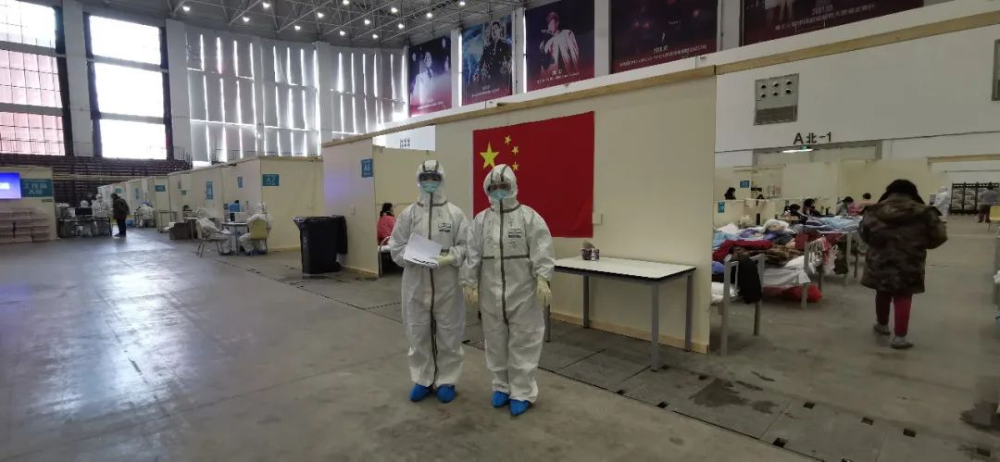
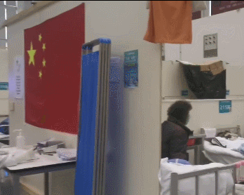
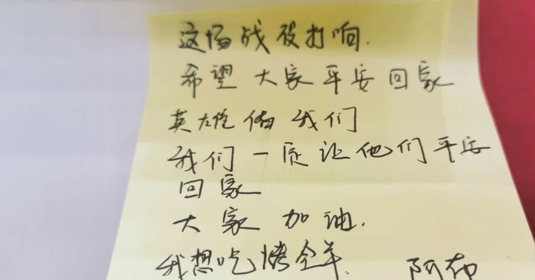

患者口述：火车站，水果刀，与世界上最好喝的稀粥
原文链接 备份链接 访谈对象：确诊患者/退休教师 采访/整理：画天 访谈时间：2月15日晚上 要活命，必须吃 我住在洪山区狮子山街道，先是在我们华中农业大学的医院拍了胸片，医生怀疑我肺部有问题，让我去外面的医院做CT。我问社区能不能接送， …


方舱医院像一座微缩城市，阿布在其间游走，写下方舱日记，记录不同的人间日常。这些小红书上的日记，是在宏大的叙事之外，建立一份普通人的历史存档。方舱的日子一定都是快乐的吗？应该是不会的。但是如果能在这些枯燥、充满未知的生活里寻找到一点点微弱的光芒，那些快乐的瞬间，是能够给人带来希望的。
文 | 林念
编辑 | 金匝
运营 | 一凡
阿布记得，那是一辆白色的大皮卡，孤零零地停在街边。时间临近晚上7点钟，路上没有什么车，武汉的气温降到了3度左右。除她之外，驾驶座后方的车斗上坐着一位女士，三位男士。他们都裹紧了衣服，蜷缩在车斗里，脸上蒙着口罩，看不清彼此的脸。那位女士呼吸急促。她告诉阿布，她还在发烧，烧得有些糊涂了。而后，车开得飞快，风凛冽地刮在他们身上，每一次颠簸，都把车斗里的人震起。阿布担心，自己会不会从车上掉下去。这辆皮卡的目的地是方舱的集中转送集合点，抵达之后，阿布会被送往武汉客厅，过去它曾是城市文化地标，疫情发生后，它被改造为方舱医院，床位达1461张，是武汉目前规模最大的方舱医院，负责收治轻症患者。和阿布同行的4个人，都被确诊了新型冠状病毒性肺炎。阿布从未想过新冠肺炎会降临在自己身上。得知武汉有疫情后，她做了一切防护的措施，每天在家里喷洒消毒剂和酒精，奔去药店买来了奥司他韦和莲花清瘟作为预防的药物，叮嘱所有家人24小时戴上口罩，睡觉时也不摘下。买好储备的食材后，她便极少迈出家门。“妈妈，为什么不能出去？”3岁的女儿果果问她。“外面有一个大怪兽，出去很危险的。”阿布告诉她。得到这样的回答，平时吵闹的果果变得懂事，只是偶尔会忍不住张望窗外的天。症状是慢慢显现的。1月23日，阿布开始喉咙发痒，吃了药才转好，一周后，她出现了头痛、鼻塞的症状，浑身冒起了虚汗。阿布的公公和婆婆也出现了类似的症状，2月4日，他们被断定为双肺感染。阿布慌了。第二天，她和丈夫一同去医院做了CT检查。CT结果显示，阿布的右下肺叶感染，得到结果的时候，“那一下，就像一道闪电击中了我的脑袋，‘嗡’的一声，晴天霹雳。”阿布的第一反应是“一定要把女儿保护好”。她心里后怕，果果依赖她，这些天来，母女俩都紧密地睡在一起。她不得已和丈夫、女儿分开，独自住进了另一套亲戚空置的房子里。第二天一早，母亲发来视频请求。一看事情瞒不住了，她只好坦白自己肺部感染的事实，“你们先别紧张啊，我和你们说件事情。”“你是不是确诊了？”母亲问。阿布点点头，这时候，手机两头的一家三口都陷入沉默，阿布看到，在一旁不发一言的父亲瞬间掉下了眼泪，她也忍不住哭了。2月7日，她和丈夫、女儿前往酒店隔离，才抵达酒店，就收到了核酸是阳性的消息。半小时后，社区通知她去武汉客厅方舱医院。不能和住在隔壁房间的果果正式道别，她只能发去视频通话请求，“果果，妈妈要去医院，因为妈妈生病了，你在这里要听爸爸的话，如果爸爸需要帮助，你一定要帮助他。”果果点点头，“好的，妈妈，爱你哟。”“我也爱你。”阿布说。几乎是毫无准备地，视频通话结束，阿布提着一个简易的塑料袋，随意地装上几件换洗的衣裤，坐上了那辆等待她的皮卡车。到达下一个集合点，已经是晚上9点钟。他们被暂时搁置在路边。在寒风中，阿布站得腿酸。她突然想到，她即将要面对的，也许是一段非常难忘的旅程。她在冷风中掏出手机，摄像头转向自己，“现在是2020年2月7号，我被确诊了肺炎，现在要去方舱医院了。”画面里，阿布戴着淡蓝色的口罩，一身白色的羽绒服，齐肩的栗色头发塞在帽子里。那是阿布第一条关于方舱的视频日记，迄今，她在小红书上共记录下了71条方舱日记。

▲ 阿布选择用记录的方式来度过在方舱医院的日日夜夜。图 / 受访者提供
来到方舱的第一个晚上，阿布没睡好觉，早晨6点便睁开了眼睛。开放环境下，人与人之间几乎没有隐私。躺在病床上，阿布听见了许多声音。一位上了年纪的阿姨在哭。她才入院不久，焦急地冲医护人员求助，“我80多岁的妈妈还在家里，也感染了这个病，怎么办啊？她该怎么办？”一位男性操着外地口音，安慰电话那头的母亲和孩子，“不要哭，不要哭，不必担心我，我在这里一切都好。”抚慰完家人，他开始大口喘气，暴露出刚才悉心藏好的病症。有人每隔半小时询问自己的病情，反复回答过的问题，他仍要找来医生再确认一次，烦躁地在医院里来回地走动。还有人不断嘀咕，“这里是什么鬼地方？不就是把我们拖来这里等死吗？”方舱才建成不久，硬件条件不好。移动厕所老出问题，水箱缺水，纸张和排泄物通通黏在排水口上。洗澡的队伍排得老长，浴室里，周遭的缝隙钻进飕飕的凉风，在方舱的20天里，阿布只洗过3次澡。但问题总要克服。没有现成的晾衣绳，她把蓝色的垃圾袋撕成条状，拧在一起，制成一条简易的塑料绳，绑在床头，用来晾毛巾。她在角落发现了一个废弃的喷壶，得到医务人员的许可后，往里面灌上消毒液，分给身边的病友们。“我不想去抱怨这些东西不好，只想尽量去理解它，它在最短的时间里能够做成这样已经很不错了，我总是这样对自己说。”一场广场舞让人们看到方舱的另一面。2月10日上午10点，当时七八位A8舱的病友们起床做运动，有人提议跳舞，他们便打开了手机视频，趁着音乐扭起了舞步。跳舞的视频被旁人发上了网，引来了热议。医护人员们决定，广场舞自此作为方舱医院的保留节目。当天下午6点半，一位护士将扩音喇叭架在手机边上，放起了音乐。正值饭点过后，管床的护士们到每个病床前鼓励病友下床运动。公共活动的空地上，人渐渐多了起来。A区来了近四分之一的人，相互隔着1米左右的距离。一位甘肃医疗队的护士在前头领舞，跳起了《火红的萨日朗》。

▲ 阿布用镜头记录下的这场舞蹈，感动了无数网友。图 / 阿布的小红书截图
阿布没有跳，在一旁用手机录下了这一切。她看到，医护人员穿着厚重的防护服，尽力地跳出轻快的舞步。阿布给这支舞取名叫“方舱舞”，发布在小红书后，吸引来了大量的点赞和评论。即使在这样欢乐的时刻，冲突也不可避免。第二天，病友们照例跳着广场舞，一个披着卷发的高个儿大妈，快速冲上前，抢走了护士手中的话筒，对着话筒用高昂的声音说：“你们是很开心还是怎样？你们以为来这里是享福的吗？我告诉你们，过来都是来送死的，还跳跳跳……”人群停了下来，目光死死地盯住她，“你不跳你可以回去呀”，他们开始回击，“你不想治病就回去”，声音此起彼伏，越来越嘈杂，夹杂着当地特色的“汉骂”。大妈愣住了，不再出声，把话筒往回一塞，骂骂咧咧走回了自己的病床。疾病面前，积极乐观是一种错吗？阿布琢磨过这样的问题。刚来方舱时，因为核酸迟迟不转阴，阿布偶发焦虑和沮丧。没有其他事情可做，她只能不断刷新闻，坠入新一轮的失望和恐惧。进入方舱两周后，做完第二次核酸检测，结果依然是阳性，阿布给丈夫拨去电话，边说边红了眼眶。她想念女儿，这是她和果果分别最长的一段时间。果果为她画了一张画，画里阿布穿着裙子，身上点满黄色的病毒。画完，果果挥舞着手里的画纸，在狭小的酒店房间里边跳边喊，“希望妈妈早点出院”。这些情节屡屡让阿布掉泪，“但我不想让自己一直纠结在病情上，想把情绪转换一下。看到的那些不好，我会自动地过滤掉，这样才能保持愉快的心情。”
▲ 画面中，果果挥舞着手上的画喊着：“妈妈早点出院，爱你哟”。图 / 阿布的小红书截图
为了控制自己的情绪，阿布卸载了其他的资讯平台，独独留下小红书这个生活方式社区，更新自己的方舱日记。视频日记，她只拍快乐的部分。没有专业唱歌设备，一位医生举着平时的扩音话筒唱《成都成都》，把歌词里的“成都”替换成了“武汉”，病人围着他站成一圈，随着音乐节奏摇摆。阿布还拍摄了自己参加合唱团的过程，她穿着棕褐色的迷彩服，和病友们站成一排，排练《我和我的祖国》。医护人员不能带手机，让阿布给他们拍摄视频向家人报平安。阿布的方舱日记登上了央视，连续播出了3集。她没想到，自己第一次上央视，竟是以新冠肺炎确诊患者的身份。后来，她越来越熟练，举着手机正儿八经地采访医生，还窜到方舱一些不惹人注意的角落，拍摄她觉得有趣的画面。

▲阿布的方舱日记登上央视的画面。图 / 阿布的小红书
条件艰苦，阿布也自得其乐。公共活动区域是一条露天过道，一边是卸粪车，另一边是移动厕所，阿布夹在中间悠然啃着苹果。再往前走点路，能看到好一些的景色，“那里能压压腿、拉拉筋，也挺好的呀。”她说。乐观的情绪会被感染。和阿布同一批进来的病友都是上了年纪的阿姨，她注意到一位60多岁的阿姨满脸愁云，话少，沉闷地坐在病床上。阿姨的症状比较严重，她告诉阿布，她和家里人交代好了后事，“反正我是再也回不去了，要死也死在外面吧。”阿布和旁边的阿姨们找她搭腔，“我们不会和她说，‘你肯定会没事的’这样的话，那样的力量太单薄了。大家会和她开玩笑，让她真心地笑起来，她反而会慢慢地转好。”五天后，那个阿姨终于露出了笑容。“回去还要操心做饭买菜，就在这里待着，还有饭吃。”她说。

▲ 阿布入院第二天领到的饭菜。图 / 阿布的小红书
每回领饭菜或零食、发拖鞋，阿姨们都想着给阿布留一份。医护人员发物资，如果有谁缺席，她们一定会多拿一套，生怕缺席的人饿了冷了。阿布习惯了晚睡，晚上12点多钟，阿姨们看到她的手机还亮着光，冲她喊，“阿布，还不睡觉呢。”“阿布，早点睡觉身体才会快点好。”阿布无奈地笑，乖乖把手机关了。早晨起来，阿布挨个催促她们起床打八段锦，“你们快下床，别睡了，颈椎都要睡断啦，还不下来运动？”方舱医院像一座微缩城市，阿布在其间游走，记录不同的人间日常。人来人往，难免出现争执，明明每人可以分到一瓶的酸奶，总有人成箱成箱地往自己的病床搬。因为各自想看的电视台不同，两位病人起了争执，惹来了附近驻守的警察。方舱外人与人之间的贪婪、争斗，也毫不意外地在方舱里复制上演。阿布在日记里把这些画面剔除，她更愿意记录病友间的互相支撑、医护人员的关照，她想给舱外的人带去能量和温暖。在阿布看来，乐观真的有用。她专注于挖掘生活里温暖部分的同时，方舱也发生着它的变化，某一天，她发现墙上长出了贴满便签的信心树，过了几天，医院的图书角又建了起来。“城市”在不断变好，关系的藤蔓也在不知不觉间开始生长。即使医护人员只露出一双眼睛，阿布也能喊出他们的名字。阿布去领物资，一路上都有人和她打招呼，“阿布，你怎么还没出院？”“阿布，最近感觉怎么样？”。阿布觉得自己像参加了一场“冬令营”，病友们像是同学，共同为一场大考做准备。

▲ 阿布记录下的方舱医护人员。图 / 受访者提供
发布方舱日记后，阿布在小红书上多了一些追随者，他们每天守着阿布发视频。阿布发得晚了，他们急得给她留言，担心她的病情是不是出现了新变化。她成了大家在方舱的另一双眼。这双眼睛看到的，是实实在在的方舱生活。
像阿布这样，在小红书上分享疫期生活的用户还有很多。武汉市同济医院肿瘤科的“牛牛妈妈”被调配到发热门诊后，开始在小红书上记录发热病区的日常，“作为80后的我们，小时候没有穿过纸尿裤，2020年，我们穿上纸尿裤，依然是美少女。”3月2日那天，发热病区开设满一个月时，牛牛妈妈和同事吃了“满月蛋糕”，照片里的蛋糕裹了一圈鲜黄色的芒果粒，“等大家都出院了，我们就可以‘封科’啦。”一个名为“蓝宝石”的小红书用户是驰援黄冈的一名护士。她分享了黄冈首例ECMO患者的抢救过程。由于没有转运呼吸机，送患者去往CT室的路上，他们只能用手来反复捏呼吸囊，一路奔跑着，让患者顺利做了头胸部的CT检查，再将他送回了重症病房。“这是一辈子珍贵的回忆，等多年后来看看这些，曾经的我们那么勇敢，为了心中的信念不惜一切，哪怕付出生命。”她写道。封城封路的举措让线下的城市停摆，线上互动重要性凸显，越来越多的人涌进了小红书这座虚拟城市。小红书社区生态运营负责人济颠觉得，幽闭在家的日子里，人们更渴望明亮的事物来照见生活。这个城市在自发地萌生出各种小众的圈层，来到这里，可以轻易地寻见气味相投的人。页面像一块块长方形的窗格，窗格里传来家常菜的饭香，还能听到吉他弹唱的弦音，尽是日常。小红书所在做的，是在宏大的叙事之外，建立一份普通人的历史存档。“方舱的日子一定都是快乐的吗？我想应该是不会的。但是如果能在这些枯燥、充满未知的生活里寻找到一点点微弱的光芒，那些快乐的瞬间，是能够给人带来希望的。”济颠说。属于阿布的那一份故事存档还在继续。

▲ 阿布转院前的最后一次记录，她说自己是最后一次在这个“客厅”录视频了。图 / 阿布的小红书
2月27日，阿布接到了转院的通知。她被转去中南医院进行下一步的观察。核酸仍没有转阴，她沮丧得很，小红书用户们鼓励她，“阿布呀，你就当作是高三没考中重点，再复读一年。到中南医院就是读到火箭班去了，你肯定很快就毕业了。”转院那天，阿布和熟悉的医护人员一一告别。不能接触防护服，她在相距半米左右的位置，和她们隔空做了一个拥抱的姿势。外地医疗队的医护们和阿布有一个约定，“等我们抗疫一周年，我们要再回来看一下。”阿布答应，“好，不管是你们来武汉，还是我去广东或者甘肃，我们都要再见面。”A8舱的阿姨们给阿布打包行李，担心她去了中南医院吃不饱，她们把自己平时省下来的榨菜、水果，统统放到一个纸箱里。零食越积越多，纸箱被塞得鼓鼓囊囊，一个阿姨手脚利落地用胶带将它捆牢。来的那天，阿布只有一个玫粉色行李箱，临走时，箱子变成了3个。6位病友拍了一张集体照，匆忙地建了一个“方舱战友群”。再也没有时间可以做更多的道别，阿布带着这些零食，转去了中南医院。在中南医院的检验科，她拿到了第四次核酸检验结果，显示阴性。她兴奋地洗了头发，冲了澡。她的病房正对着武汉的双湖桥，晚上望过去，是一条紫色和白色交接的灯带。桥两边的建筑的灯火，一天比一天明亮。
晚风吹了进来。阿布想，春天，总归是要来了吧。

▲ 阿布在信心树上留下的愿望便签纸。图 / 阿布的小红书

每人互动
阿布的方舱日记给你的感受是怎样的？

文章为每日人物原创
侵权必究


原文链接 备份链接 访谈对象：确诊患者/退休教师 采访/整理：画天 访谈时间：2月15日晚上 要活命，必须吃 我住在洪山区狮子山街道，先是在我们华中农业大学的医院拍了胸片，医生怀疑我肺部有问题，让我去外面的医院做CT。我问社区能不能接送， …
原文链接 备份链接 2月9日，温州康宁医院集团精神心理科主任医师唐伟，跟随浙江第三批援鄂医疗队抵达武汉，参与武汉抗疫一线的心理危机干预，为医护人员和患者，提供心理援助。 期间，唐伟主任在日记中记录了医护人员克服艰难，奋战抗疫一线的经历。八 …
原文链接 备份链接 出院——隔离——回家，越来越多人走在这样一条重回阳光下的道路上。最后的战役已经打响，所有人都还需要站好最后一班岗 ***********刘以秦 | 文*********** …
原文链接 备份链接 作者：北林 编辑：北林 特别不感谢：给阻止疫情制造麻烦的混蛋们 我听来了许多虚假的、不符合主流的、刻意制造矛盾的流言蜚语; 发这里是告诉大家: 不要相信，不要转发， 都是假的，不要去调查， 尤其是记者们，以下都是假 …
原文链接 备份链接 这不同于我们寻常的生活体制，这是一个客观上紧张严肃、主观上轻松活泼的“现实扭曲场”。在方舱里，治疗之外，医生、护士和病人有重新组织起生活的可能性。人们尚且拥有充足的空间和精力，将原有的社会身份和行为习惯投射到新环境中， …